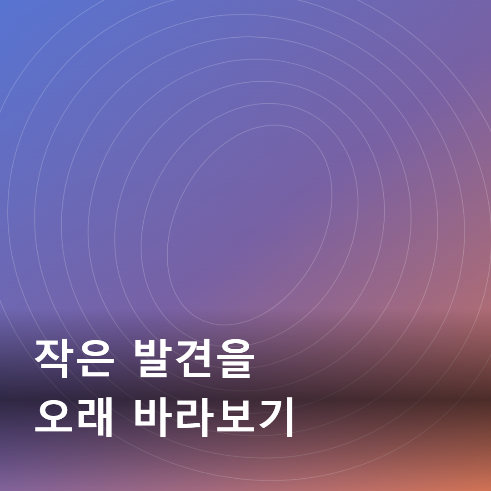

발견 · 1:1 PNGFRAME LAB / FIELD NOTES
이미지 한 장과 문구 한 줄을 편집하고, 미리보기와 같은 PNG로 저장합니다.
문구를 끌어 옮기거나 Tab으로 선택한 뒤 방향키로 조정하세요. Shift 방향키는 크게 이동합니다. 네온·필름·미니멀·매거진 프리셋은 이미지와 문구를 유지합니다. 집중 모드에서는 캔버스를 크게 보고, Escape로 패널을 다시 표시합니다.
페이드·슬라이드·타이핑·줌은 3초 동안 미리 볼 수 있습니다. PNG는 효과가 끝난 완성 장면을 저장하고, 영상 버튼은 약 3초 WebM 파일을 생성합니다. MP4·GIF는 제공하지 않습니다. 움직임 줄이기를 켜면 재생이 즉시 멈춥니다. WebM 저장 미지원 브라우저에서는 버튼이 비활성화됩니다.
같은 브라우저에 최대 24개, 이미지와 설정 전체 32MB까지 저장합니다. 선택한 카드의 수정은 같은 ID에 반영됩니다. 최근 삭제는 취소할 수 있습니다. JSON은 다른 기기에서 옮겨 쓸 수 있고, 전체 검증을 통과한 뒤에만 저장합니다.
작성 중인 카드는 이 브라우저에 자동 저장되고 새로고침 뒤 복구됩니다. 새 카드로 다시 시작할 수 있고 실행 취소로 이전 작업에 돌아갈 수 있습니다. 저장 공간이 부족하면 자동 저장 불가를 표시합니다. 브라우저 데이터 삭제·시크릿 창 종료로 템플릿이 없어질 수 있으므로 중요한 작업은 PNG와 JSON으로 보관하세요. 편집기는 불러온 파일을 별도 서버에 업로드하지 않습니다.
3개 모두 프로젝트 내부 제작 · AI의 코드 구현 지원으로 추상 Canvas 그래픽과 문구를 제작했습니다. 외부 원본·사진 없이 만든 합성 이미지이며, 학생이 직접 그린 작품이라고 주장하지 않습니다. MIT로 제공하며 위치 메타데이터는 없습니다.
동일한 긴 한글 문구를 사용했습니다. 수정 전 한 줄 폭은 41,886.09375px인데 사용 가능한 폭은 936px여서 잘렸습니다. 수정 후에는 33px·20줄로 자동 조정되어 안전 영역 안에 들어왔습니다. 아래 기록은 실제 브라우저 실행에서 수집했습니다.
| 기준 | 검사 내용 | 확인 결과 |
|---|---|---|
| T03-C01 | 공개 결과물·소스 | 기존 Sites 주소는 사용자가 새 시크릿 창의 무로그인 열림을 확인했습니다. GitHub Pages 주소는 이전 배포 후 다시 확인합니다. |
| T03-C03 | 첫 화면 이미지·문구 도구 | 1366×768 / 1920×1080에서 보임 |
| T03-C04~C05 | PNG·JPEG 불러오기 | 세로 PNG·가로 JPEG 정상 처리 |
| T03-C06~C08 | 위치·크기·색 즉시 반영 | 실제 input 이벤트와 문구 영역의 RGB 픽셀 대조 |
| T03-C09~C10 | 지원하지 않는 파일 거부 | 화면 거부 이유·기존 편집 보존 |
| T03-C11~C13 | 세 비율 화면·PNG 일치 | 전체 픽셀 채널 차이 0건 |
| T03-C14 | 극단 입력 12건 | 12건 PASS |
| T03-C15 | 실제 결함 수정 전후 | 동일 긴 한글 입력 FAIL → PASS |
| T03-C16 | 잘못된 입력 후 보존 | 위장·손상·용량 초과·과도한 줄바꿈 거부 후 보존 |
| T03-C17~C21 | 템플릿 3개 CRUD·새로고침 | 안정 ID로 생성·불러오기·수정·삭제·유지 |
| T03-C22~C24 | JSON 복원·거부 | 정상 복원 / 손상·필수 누락 전체 검증 후 거부 |
| T03-C25~C26 | 완성 이미지 3개 | 3가지 비율·문구·정상 디코딩·파일 다시 열기 |
| T03-C27 | 이미지 사용 권한 | 프로젝트 내부 제작 · AI 지원 명시 |
| T03-C28 | 위치 메타데이터 | 공개 이미지 GPS 0건 · 파일 메타데이터 검사 |
| T03-C29~C30 | 개인정보·비밀값 | 정적 배포 파일 검색·기본 화면 확인: 개인정보·비밀값 0건 |
| T03-C31~C32 | 확인법 4줄·판단 3줄 | 제출문에 구분하여 제공 |
이전 버전 탭이 저장소 연결을 유지하여 업그레이드가 대기하면 버튼 등록까지 멈추던 실제 문제를 재현했습니다. 편집 기능을 먼저 준비하고 저장소는 별도로 연결하도록 수정했습니다. 기존 템플릿과 자동 복구 기록을 보존하며, 연결이 막혀도 편집·PNG·영상 저장은 사용할 수 있습니다. 저장소 연결 지연이 표시되면 이전 탭을 새로고침하고 저장소 다시 연결을 누르세요.
빠르게 이어 누른 효과 선택을 무시하던 문제는 순서대로 처리하도록 고쳤습니다. 자동 복구 시 JPEG를 반복 압축하던 문제도 정리했습니다. 마우스·Enter·Space·Escape 조작과 실제 PNG·JSON·WebM 생성, 저장소 재연결을 검사했습니다.
최종 수정본에서 클릭·저장소 검사 39건과 기존 편집 기능 재검사 52건이 통과했습니다. 자동 복구는 같은 설정과 최종 PNG 바이트가 일치하는지 대조했습니다.
최종 기능 재검사 52건 원본 · 복구 수정 전 FAIL 원본 · 공개 파일 점검
2026-10-05: 해당 디자인 정리 단계에서는 편집기 HTML과 동작 코드를 유지하고 CSS를 정리했습니다. 이후 클릭 복구 단계에서 동작 코드를 수정했습니다. 두 기준 화면에서 이미지 불러오기·문구 입력·미리보기가 첫 화면에 보이고, 모바일을 포함한 세 크기에서 가로 넘침이 0px입니다. 기존 52건의 기능 검사 기록은 변경 전 Studio 기능에 대한 실제 기록입니다.
새 기능 18건, 기존 극단 입력 12건, 비율 3건, 템플릿·JSON 9건, 화면 3건, 기본 편집·안전 7건을 실제 브라우저에서 실행했습니다. 새 기능에는 이동·취소·다시 실행·경계 제한·자동 복구·기존 JSON 호환·움직임 줄이기·WebM 4개 디코딩을 포함합니다.
테스트 입력은 개인정보 없는 합성 도형입니다. 로컬에서 합성 GPS를 삽입한 JPEG로 제거 여부를 확인했습니다. GPS가 있는 원본 테스트 파일은 공개하지 않습니다.